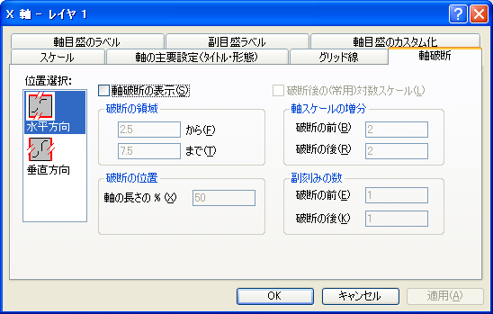

内容 |
| 水平方向 |
これは通常 (下または上の)X軸を表します。ただし、X軸とY軸を交換している場合(｢グラフ操作：X軸とY軸の交換｣メニューコマンド)や、グラフの種類が横棒、浮動横棒、積み上げ横棒の場合は(左または右の)Y軸を表します。 |
|---|---|
| 垂直方向 |
これは通常 (左または右の)Y軸を表します。ただし、X軸とY軸を交換している場合(｢グラフ操作：X軸とY軸の交換｣メニューコマンド)や、グラフの種類が横棒、浮動横棒、積み上げ横棒の場合は(下または上の)X軸を表します。 |
軸の属性を編集し終えたら、軸位置選択リストボックスから適切なアイコンを選択して、グラフの別の軸を編集することができます。選択した設定をグラフに適用するのをやめるには、編集中にキャンセルボタンをクリックします(適用ボタンを押す前に)
|
Note: 3Dグラフの軸には、軸破断を付けることはできません。 |
このチェックボックスにチェックをすると、軸破断が表示されます。
『から』テキストボックスに、軸破断の直前の値を指定します。『まで』テキストボックスに、軸破断の直後の値を指定します。
『軸の長さの%』テキストボックスで軸の破断位置を指定します。この値は、軸の長さの何%にあたる位置に破断を挿入するかを、%単位で指定します。例えば、『軸の長さの%』のテキストボックスに50を入力すると、破断は軸の中心に位置されます。必要に応じて、指定された位置に対応するように破断の片側のスケールが変更されます。
このチェックボックスを選択すると、破断の右側のスケールが、(常用)対数スケールタイプになります。
『破断の前』と『破断の後』のテキストボックスに、軸破断の前後の増分を指定します。各増分の間隔で、主刻みと主目盛ラベルが表示されます。
『破断の前』と『破断の後』のテキストボックスに、軸破断の前後の(主刻み間の)副刻みの数を指定します。この設定により、｢軸｣ダイアログボックス、『スケール』タブの『副刻みの数』テキストボックスの値は、無視されます。